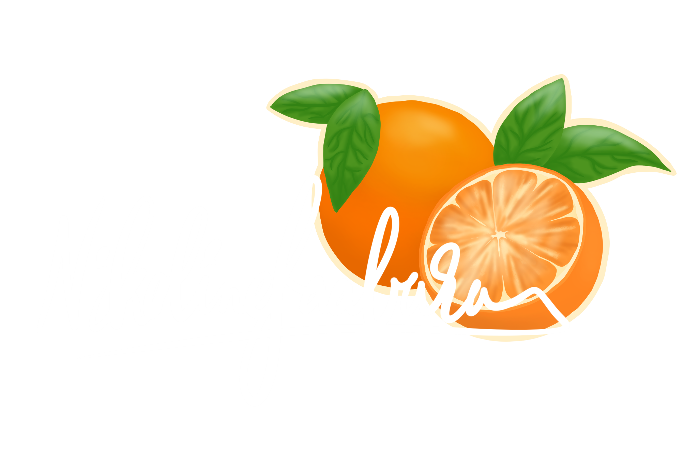

ALLE PROJEKTER
Vejle Fjords ukendte steder
Websitet er en eksamensopgave fra 1. semester og skal formidle tre mindre kendte steder langs Vejle Fjord. Formålet med websitet er at sætte fokus på oplevelser i Danmark og lokalområdet. Jeg har selv taget billeder og video samt stået for webdesignet og kodet prototypen.
BESØG SIDENNippon
Et website for en japansk inspireret måltidskasse, som er et gruppeprojekt fra 2. semester. Vi valgte målgruppen skulle være unge mennesker med fast indkomst uden børn. Jeg har kodet opret- og betalingsfasen, med fokus på UX-writing og onboarding.
BESØG SIDENCocio LactoFree
Jeg vil gerne afprøve produkt design og lavede et hurtigt design til Cocio, hvis de skulle lancere en laktosefri Cocio. Jeg har arbejdet med blendingmodes og smartobjects i Photoshop.
Sustainable Web Design
KOMMER SNART
Et i gangværende gruppeprojekt fra 3. semester, hvor et webbereau har til formål at oplyse om og reducere CO2-udledningen af digitale løsninger. I mellemtiden kan I læse mere om Sustainable Web Design her:
Fordybelse i fritiden
I min fritid kan jeg godt lide at tegne og male, og det har jeg gjort i mange år.
Jeg har lavet en instagram til formål at dele mine værker med venner og familie, men kontoen er offentlig.
For et par år siden anskaffet jeg mig en iPad, og er begyndt at lave illustrationer i Procreate også.